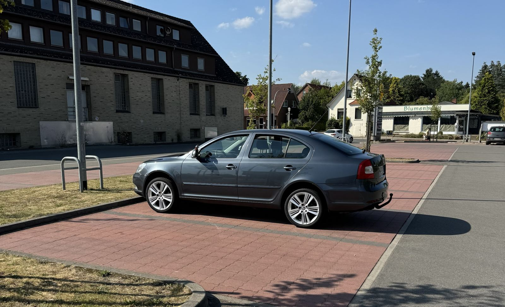

Škoda Enyaq RS Coupé
Unser hellgrünes Fahrschulauto: vollelektrisch, leise und mit modernen Assistenzsystemen wie Lane Assist und adaptivem Tempomat. Darin machst du deinen Führerschein B oder B197.
Startseite / Fahrzeuge
Zwei Škoda-Fahrschulautos, ein Anhänger und ein Fahrsimulator – alles in Salzhausen-Oelstorf.
Unser hellgrünes Fahrschulauto: vollelektrisch, leise und mit modernen Assistenzsystemen wie Lane Assist und adaptivem Tempomat. Darin machst du deinen Führerschein B oder B197.

Der Škoda Octavia ergänzt unseren Enyaq als zweites Fahrschulauto.

Für die Anhängerausbildung fährst du mit dem Enyaq und dem Anhänger der Fahrschule – vom Ankuppeln bis zum Rückwärtsfahren.

Die ersten Minuten am Steuer ganz ohne Verkehr: Lenken, Pedale und Blickführung übst du im abgeschirmten Simulator. Hier darf jeder Fehler passieren – ohne Blechschaden.